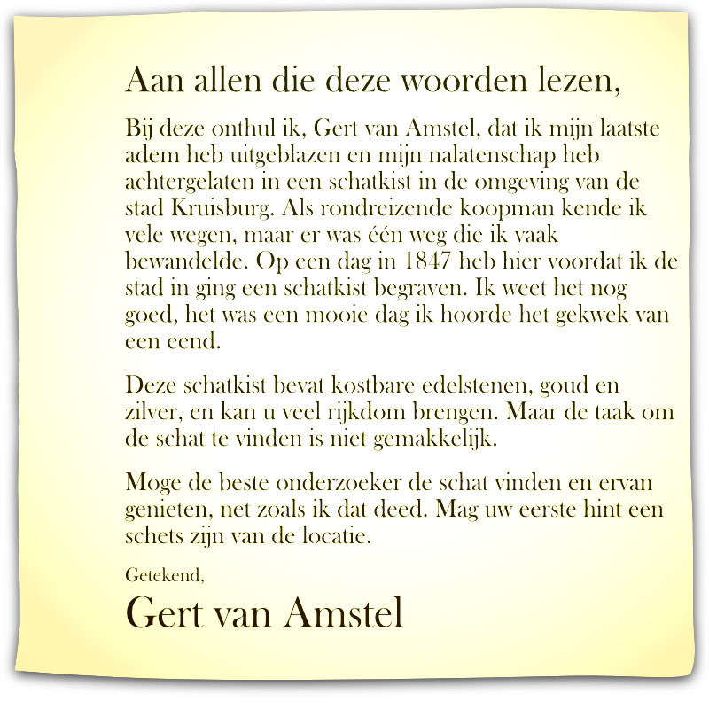
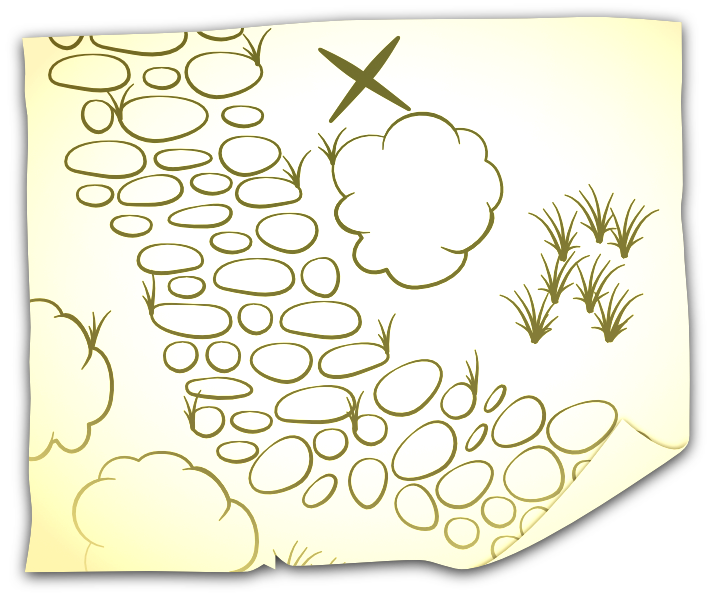
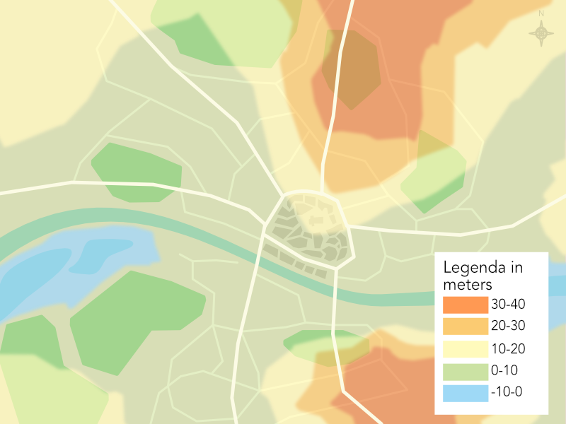
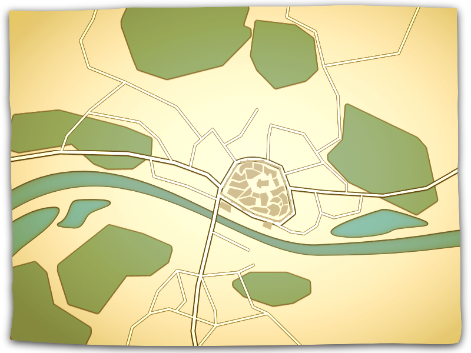
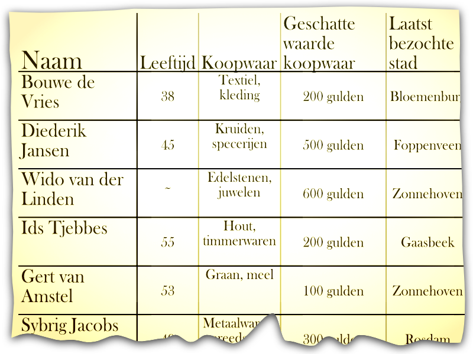

Testament Gert van Amstel - 1876

Het testament van Gert van Amstel.
Schets Gert van Amstel - 1850

Een schets van de locatie van de schat gemaakt door Gert van Amstel.
Hoogtekaart Kruisburg - nu

Een kaart van Kruisburg die de hoogte aangeeft van de stad en zijn omgeving.
Kaart Kruisburg - circa 1850

Een kaart van Kruisburg uit ongeveer 1850.
Logboek Kruisburg - 1847

Logboek van inkomende koopmannen in de stad, deze koopmannen worden geregistreerd bij de stadsmuren voordat ze de stad in komen.